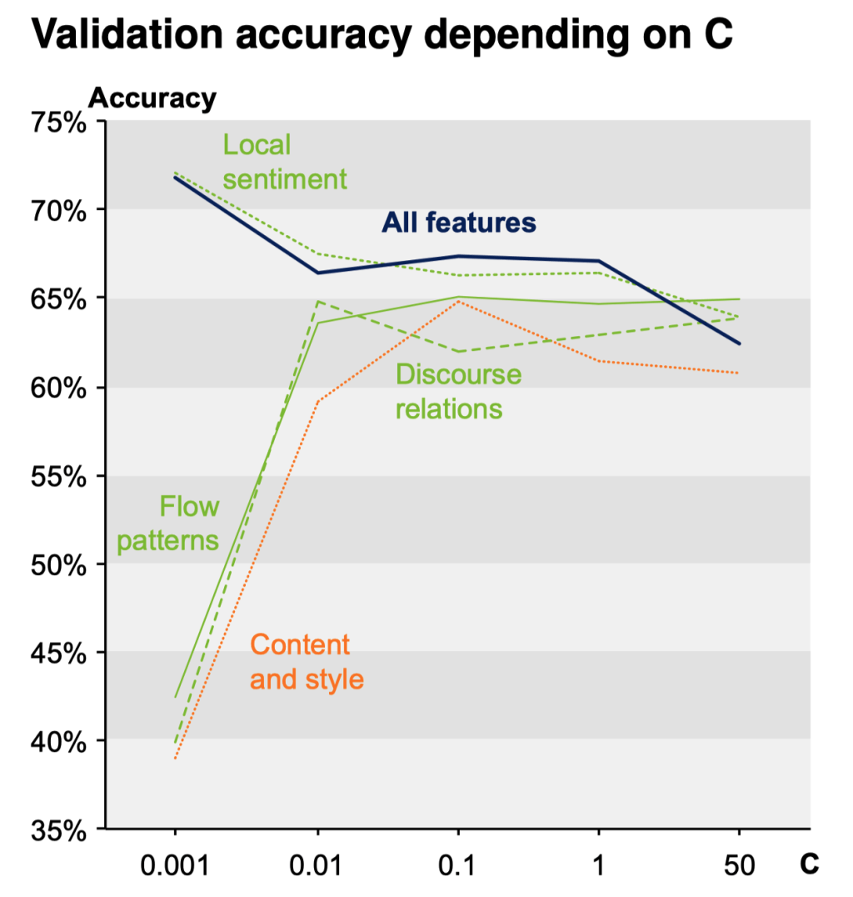
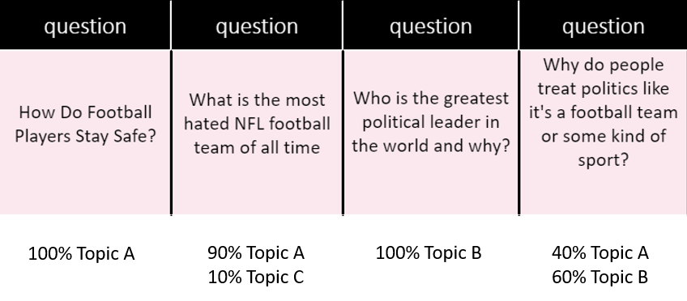
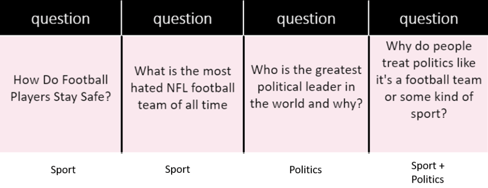
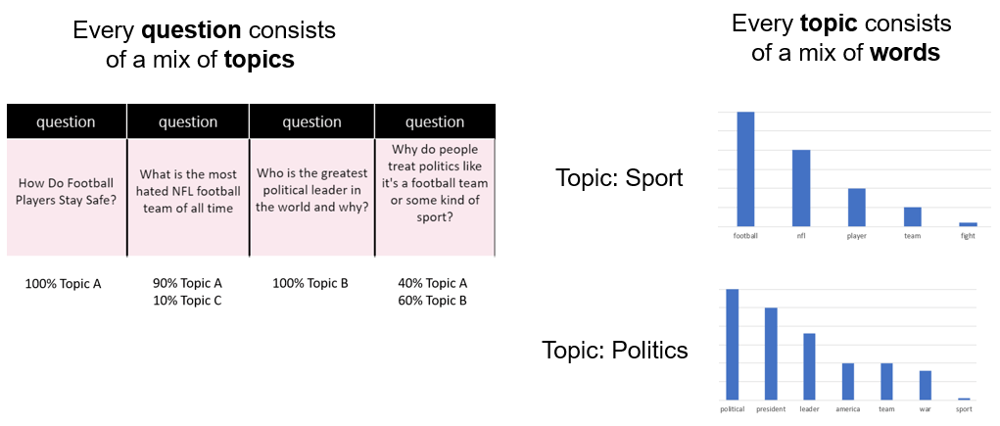
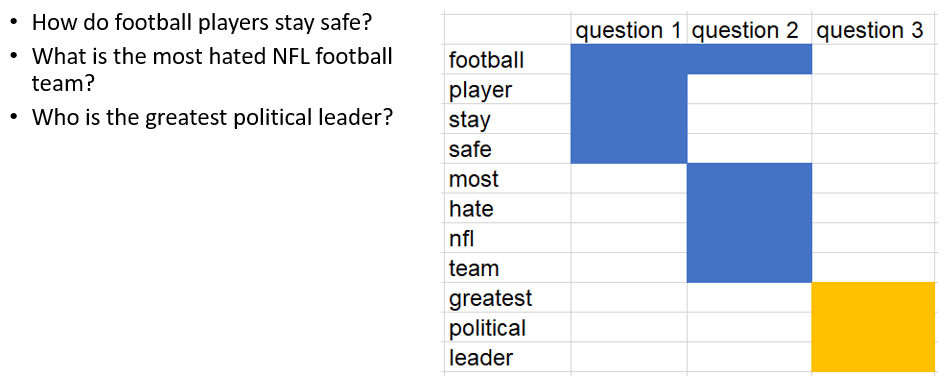
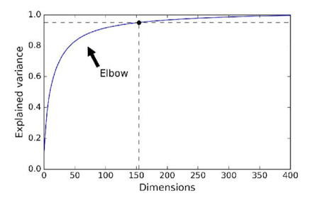
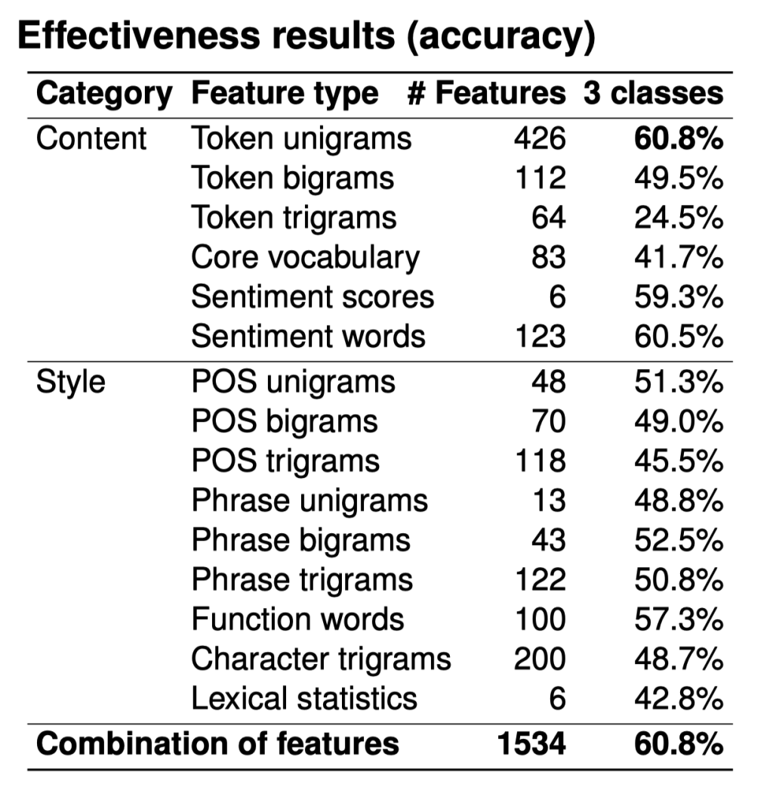

Topic Modeling
Contents
Topic Modeling#

Topic Models#
summarize unstructured text
use words within document to infer subject
useful for dimension reduction
topic models are more interpretable than other dimension reduction methods, such as PCA.
Latent Dirichlet Allocation (LDA)#

Latent means hidden, Dirichlet is a type of probability distribution. Latent Dirichlet Allocation means that we are trying to find all the probability distributions and they are hidden.
Latent Dirichlet Allocation (LDA):
Each topic is a distribution over words.
Each document is a distribution over topics.
Input: \(N \times M\) document-term count matrix \(X\)
Assume: there are \(K\) topics (tunable hyperparameter, use coherence).
Like PCA or NMF, LDA works by factorizing \(X\) into:
an \(N \times K\) document-topic matrix
an \(K \times M\) topic-term matrix
When we fit these 4 questions to LDA, it will give us back something like this:

The 1st question is 100% of Topic A, the 3rd question is 100% of Topic B, and the last question is split of Topic A and Topic B.
The word “football” has the highest weight in Topic A, followed by “NFL” followed by “player”. So we could infer that this topic is about sport.
The word “politics” has the highest weight in Topic B, followed by “leader”, followed by “world”. So we could infer that this topic is about politics. As shown below:
Topic A: 40% football, 30% NFL, 10% player … Sport
Topic B: 30% political, 20% leader, 10% world … Politics
Then we go back to our original questions, here are the topics!

To dive a little deeper, every questions is a mix of topics, and every topic is a mix of words.

A question is a probability distribution of topics, and every topic is a probability distribution of words.
What LDA does is that when you fit it with all those questions, it is trying its best to find the best topic mix and the best word mix.
Non-negative Matrix Factorization (NMF)#
We take the term-document matrix, decompose to two matrices, first one has every topic and what terms in it, and 2nd one has every document and what topics in it.

On the left we have 3 questions, on the right we have term-document matrix for these 3 questions. We choose k=2 topics.

After decomposition, we got two non-negative matrices of the original n words by k topics and those same k topics by the m original documents.

Topic Modeling Example using NMF and SVD#
The problem#
term-document matrix:
We can decompose this into one tall thin matrix times one wide short matrix (possibly with a diagonal matrix in between).
Notice that this representation does not take into account word order or sentence structure. It’s an example of a bag of words approach.
 source:
source: Motivation#
Consider the most extreme case - reconstructing the matrix using an outer product of two vectors. Clearly, in most cases we won’t be able to reconstruct the matrix exactly. But if we had one vector with the relative frequency of each vocabulary word out of the total word count, and one with the average number of words per document, then that outer product would be as close as we can get.
Now consider increasing that matrices to two columns and two rows. The optimal decomposition would now be to cluster the documents into two groups, each of which has as different a distribution of words as possible to each other, but as similar as possible amongst the documents in the cluster. We will call those two groups “topics”. And we would cluster the words into two groups, based on those which most frequently appear in each of the topics.
Document Clustering#
Cosine Similarity#
Representatio nof document \(i\) as a vector \(x_i\)
for example \(x_i\) = term counts or \(x_i\) = IDF-weighted term frequencies
Each document is a non-negative vector in an \(n_x\)-space, where \(n_x\) = vocabulary size
documents are rays, and similar documents have similar vectors
Can measure similarity between documents \(i\) and \(j\) by the cosine of the angle between \(x_i\) and \(x_j\):
With perfectly collinear documents (that is, \(x_i = α x_j\), \(α \gt 0\)), \(cos(0) = 1\)
For orthogonal documents (no words in common), \(cos(\pi/2)=0\)
Cosine similarity is computable as the normalized dot product between the vectors: $\( cos\_sim(x_1,x_2) = \frac{x_1 \cdot x_2}{\|x_1\|\|x_2\|}\)$
from sklearn.metrics.pairwise import cosine_similarity
# between two vectors:
sim = cosine_similarity(x, y)[0,0]
# between all rows of a matrix:
sims = cosine_similarity(X)

Dimensionality Reduction#
Datasets are not distributed uniformly across the feature space.
They have a lower-dimensional latent structure – a manifold – that can be learned.
Dimensonality reductionmakes data more interpretable – for example by projecting down to two dimensions for visualization.improves computational tractability.
can improve model performance.
Swiss Roll reduction with LLE#
%config InlineBackend.figure_format='retina'
import matplotlib.pyplot as plt
from mpl_toolkits.mplot3d import Axes3D
from sklearn import manifold, datasets
X, color = datasets.make_swiss_roll(n_samples=1500)
print("Computing LLE embedding")
X_r, err = manifold.locally_linear_embedding(X, n_neighbors=12, n_components=2)
print("Done. Reconstruction error: %g" % err)
Computing LLE embedding
Done. Reconstruction error: 1.23163e-07
fig = plt.figure(figsize=(12,8))
ax = fig.add_subplot(211, projection="3d")
ax.scatter(X[:, 0], X[:, 1], X[:, 2], c=color, cmap=plt.cm.Spectral)
ax.set_title("Original data")
ax = fig.add_subplot(212)
ax.scatter(X_r[:, 0], X_r[:, 1], c=color, cmap=plt.cm.Spectral)
plt.axis("tight")
plt.xticks([]), plt.yticks([])
plt.title("Projected data")
plt.show()

PCA (principal component analysis) / SVD (singular value decompositio)#
PCA computes the dimension in data explaining most variance.
after the first component, subsequent components learn the (orthogonal) dimensions explaining most variance in dataset after projecting out first component.
from sklearn.decomposition import PCA
pca = PCA(n_components=10)
X_train_pca = pca.fit_transform(X_train)


PCA/NMF for Dimension Reduction#
Data can be reduced by projecting down to first principal component dimensions.
Distance metrics between observations (e.g. cosine similarity) are approximately preserved.
For supervised learning, reduced matrix be used as predictors instead of the original matrix.
but might destroy (a lot of) predictive information in your dataset.
compromise: use feature selection to keep strong predictors, and take principal components of weak predictors.
PCA dimensions are not interpretable.
For non-negative data (e.g. counts or frequencies), Non-negative Matrix Factorization (NMF) provides more interpretable factors than PCA.
k-means clustering#
Matrix of predictors treated as a Euclidean space (should standardize all columns)
algorithm: initialize cluster centroids randomly, then shift around to minimize sum of within-cluster squared distance
from sklearn.cluster import Kmeans
kmeans = KMeans(n_clusters=10)
kmeans.fit(X)
assigned_cluster = kmeans.labels_


Other clustering algorithms#
“k-medoid” clustering use L1 distance rather than Euclidean distance; produces the “medoid” (median vector) for each cluster rather than “centroid” (mean vector).
less sensitive to outliers, and medoid can be used as representative data point.
DBSCAN defines clusters as continous regions of high density.
detects and excludes outliers automatically
Agglomerative (hierarchical) clustering makes nested clusters.